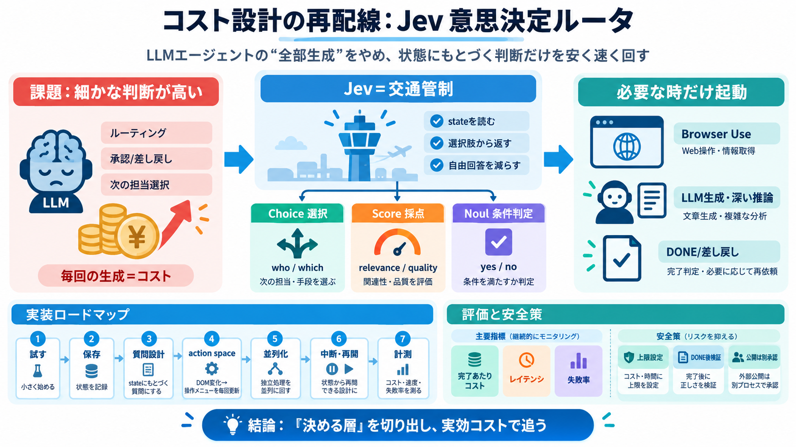

TypeSafe AI Jev: The Fastest and Cheaper AI Model You Ever Seen!
[1:32] or Claude Fable 5 can cost up to $10 per million tokens. In contrast, Jeff comes [1:39] in at just 0.042 per mill…

LLMエージェントの「全部生成」をやめて、状態にもとづく意思決定だけを安く速く回す発想です。
Browser Use（ブラウザ操作）と組み合わせ、必要なときだけ高価な処理を起動します。
エージェント運用では、ルーティング・承認/差し戻し・次の担当選択などの判断が頻発し、毎回のLLM推論がコストになります。
次に誰が動く？
レビューで止める？進める？
“生成”が課金に直結
曖昧な自由回答ほど無駄が増える
Jevは「文章生成」ではなく、state（状態）を読み、選択肢から次の行動を返すSystem Oneとして位置づけられます。
state
状況・進捗・候補
選択/評価/承認
ルーティングを固定化
次のワーカー
またはDONE/差し戻し
Jevは高速に分岐を捌く交通管制で、複雑な作業は必要なときだけ別モデルやブラウザへ渡します。
高価な作業
要約・生成・深い推論
安い分岐
次アクション選択/承認判定
狙い：無駄な推論呼び出しを減らす。
判断を3系統に分けると、出力が型に揃い、曖昧な自由回答による無駄が減ります。
Choice（選択）
次に誰が動く？どれを実行？
Score（評価）
関連度を尺度で採点
Noul（条件）
公開/非公開など yes/no
例ではBrowser Use + Jevでフライト探索が約7秒・約$0.0039とされています（ただし“探索”であり“予約”ではない）。
探索を短縮
判断をルータ化して呼び出し削減
内訳は分離
ブラウザ側コストは別途発生し得る
“見かけ単価”より“タスク完了あたり”で評価する。
まず意思決定の形を確認し、次にハンドオフをキューへ、最後に並列化と安全な中断・再開へ拡張します。
試す→保存→質問設計
① Playground ② APIキー/SDK ③ Choice/Score/Noul設計
実行→並列→運用
④ action space設計 ⑤ 並列化 ⑥ 中断・再開 ⑦ 計測
Browser Useはクリック後にDOMや候補が変わるため、「毎ステップ新しい操作可能メニュー」を作り、古い候補で誤選択しない設計が鍵です。
現在のDOM/状態
表示・選択肢・遷移
次アクションを選ぶ
状態に整合する分岐のみ
操作メニュー再構築
次のstepへ
同じstateで独立に評価できる判断は並列化し、DONE後は検証/再実行回避で回数課金を抑えます。
待ち時間削減
評価・分類・承認を同時に
無駄なループ防止
DONE後に別で結果確認
Jevが安くても、誤ルーティングでタスク全体が失敗すると高くなり得ます。したがって「タスク完了あたり」で追跡します。
完了あたり
コスト・レイテンシ・失敗率
“探索/生成”混在
flightのように内訳が分離
価格内訳計測
入力トークン等の確認
Jevは状態に対して選択肢ベースの判定を返す前提で、自由形式の生成に比べて無駄と曖昧さを減らしやすい設計です。
state→選択
ルーティング/承認を構造化
文章で判断
毎回の推論がコストになりやすい
自動化の信頼は“確信度”だけで決めず、行動回数/支出上限・中断時の状態参照・DONE後検証・公開は別承認を入れます。
上限
行動回数/支出上限
中断
最後の完了状態を参照
検証
DONE後に別チェック
主張が魅力的でも、ベースライン比較・モデル選択・停止条件・計測手法が不足すると再現性が落ちます。導入前に自分の環境で検証が必要です。
ベースライン
現行構成を先に測る
完了品質×コスト
失敗要件も定義して検証
エージェント内の「判断」をJevのような安いルータに切り出すと、従来のLLM依存スタックを再設計する方向性が見えてきます。
MVPで分岐型
Choice/Score/Noulを先に固定
実効コスト計測
完了あたりで追う
検証と承認
DONE後の確認を分離
（ご希望があれば）用途に合わせた「最小構成MVPチェックリスト」も作成できます。
[1:32] or Claude Fable 5 can cost up to $10 per million tokens. In contrast, Jeff comes [1:39] in at just 0.042 per mill…
All the questions in one call are answered in parallel, in one pass, not token after token. That’s why adding questions …
TypeSafe prices Jev's input tokens at $0.042 per million tokens, compared to the $0.20 to $10 range charged by leading L…
Compare Jev Latest from Typesafe to other AI models on key metrics including benchmarks, price, context length, and othe…
## AI / テクノロジー ## Microsoft AI Models（MAI）とは？7モデルの特徴・料金・情シスが押さえるべき導入判断ポイント【2026年最新】 ## AI / テクノロジー ## Muse Sparkとは？料金…